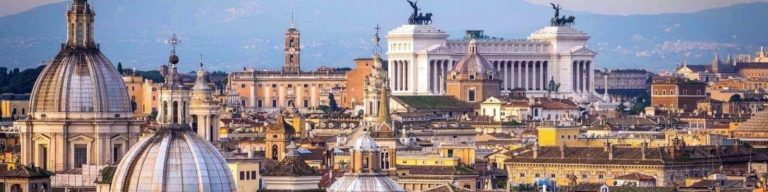

Італія
Італія — держава на півдні Європі в центрі Середземномор’я, розташоване здебільшого на Апеннінському півострові. Країна також займає невелику (північно-західну) частину Балканського півострова, Паданську рівнину, Південні Альпи та ряд великих і дрібних островів Середземного моря, серед яких Сицилія і Сардинія. Італія на північному заході межує з Францією, на півночі — зі Швейцарією та Австрією, на північному сході — зі Словенією. Держава також має внутрішні кордони з Ватиканом і Сан-Марино. Це країна з найбільшою культурною, історичною та художньою спадщиною, колиска однієї з найбільших імперій в історії людства та епохи Відродження.
Рим
Кількість пам’яток в Римі (італ. Roma, лат. Rōma) досягає таких величин, що всього через пару годин у цьому місті мозок і серце мандрівника початківця відмовлятися сприймати нові. Тому провести в Римі тільки день-два — просто злочин. Сюди можна приїжджати й приїжджати, й приїжджати. Головне — розуміти, що Рим — це не Італія. Вважайте, що це окрема країна або навіть окремий світ. Рим страшенно старий і назавжди молодий, він бачив розквіт і занепад однієї з найбільших цивілізацій в історії. Не дивно, що весь його історичний центр оголошений об’єктом Всесвітньої спадщини. Докладніше.
Венеція – одне із найбільш унікальних місць не тільки в Італії, але й у всій Європі. Місто на воді із чудовою архітектурою та цікавою історією вже давно стало “Меккою” відпочинку для багатьох мандрівників.Венеція – місто вічних романтиків із власним неповторним колоритом. Його часто називають містом-музеєм – тут майже кожна будівля має свою легенду. Тісно забудований розкішними старовинними будівлям історичний центр міста розташований на 120-ти невеликих піщаних островах, які з’єднуються між собою 400-ми мостами. Докладніше.